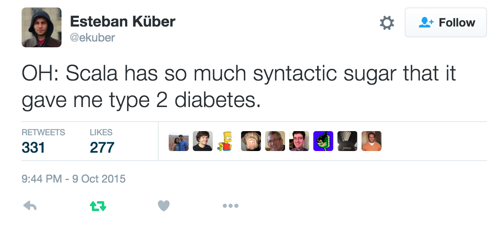

7* sins of a Scala beginner
Jakub Kozłowski - Scala Developer, Scalac
* - actually, 5ScalaIO | November 2, 2017 | Lyon, France
5 sins of a Scala beginner
Jakub Kozłowski - Scala Developer, Scalac
ScalaIO | November 2, 2017 | Lyon, France
Be advised
No silver bullets
Be pragmatic about your code
Sin 1
Sacrificing readability for conciseness
Sin 1 - Sacrificing readability for conciseness
Map(...).map(_._1)No context
Map(...).map { case (name, _) => name }Sin 1 - Sacrificing readability for conciseness
val results = elems.map(...).flatMap(...).filter(...).groupBy(_._2)....count(...) + 5Unclear reasoning, hard to read/debug
Create intermediate vals with meaningful names
Sin 1 - Sacrificing readability for conciseness
trait UserInfoService {
def fetchUserInfo(userId: UserId) = ...
}Type leaks implementation details, is too concrete, eases breaking binary compatibility
Specify annotation with the right level of abstraction
def fetchUserInfo(userId: UserId): Future[Option[UserInfo]] = ???Rule of thumb - if you aren't:
storing your code on a floppy disk
writing a tweet
writing Game of Thrones

Sin 1 - Sacrificing readability for conciseness
"Programs must be written for people to read, and only incidentally for machines to execute"
Think about how much meaning your code has, not how many characters you save
Sin 2
Feature overuse
Sin 2 - Feature overuse
case class UserService(http: Http) {
def fetchUser(id: UserId): Future[User] = http.get(...)
}just use apply or new
Sin 2 - Feature overuse
val resultF = WS url "https://google.com" withHeaders (...)
withQueryString (...) getUse dot notation for non-symbolic names
Sin 2 - Feature overuse
def extract(name: String): (String, String)def extract(name: String): (FirstName, LastName)def extract(name: String): FirstAndLastNameSin 2 - Feature overuse
xs.map(f)
.flatMap {
_.flatMap(g).map(h)
}
.map(i)Sin 2 - Feature abuse
always think about readability
use the minimal viable solution for the task at hand
follow the Principle of Least Power
Sin 3
The one about implicits...
Presumably the most abused Scala feature
Sin 3 - Abusing implicits
case class UserId(value: Int) extends AnyValimplicit def uid2i(uid: UserId): Int = uid.valueimplicit def i2uid(i: Int): UserId = UserId(i)Missing the point of value classes
Explicit conversions, e.g.
10.toUserIdSin 3 - Abusing implicits
implicit def s2i(s: String): Int = s.toIntSin 3 - Abusing implicits
def doSth(implicit seq: List[String])implicit val x = List("hello", "world")
val a: String = 2 // java.lang.IndexOutOfBoundsException: 2Avoid implicits of standard/common type (
Monad[List] is fine, List[HttpHeader] is notWrap the type in a value class or come up with an ADT instead
Sin 3 - Abusing implicits
def doSth(implicit seq: List[String] = List("x"))See previous point
Sin 3 - Abusing implicits
Implicits are a powerful feature - use it with care
Sin 4
Trying to outsmart the language
Sin 4 - Trying to outsmart the language
def printStuff(config: Config, mxn: MxN): String = {
var builder = StringBuilder.newBuilder
builder = builder.append("\n")
for (i <- 0 until mxn._1) {
for (y <- 0 until mxn._2) {
builder = builder.append("|")
if (config.exists(o => o._1 == (i, y))) {
config.filter(t => t._1 == (i, y)).
map(_._2).foreach(p => {
builder = builder.append(p)
})
} else {
builder = builder.append(" ")
}
}
builder = builder.append("|\n")
}
builder.toString
}def mkString(start: String, sep: String, end: String): String = {
val b = new StringBuilder()
var first = true
b append start
for (x <- self) {
if (first) {
b append x
first = false
}
else {
b append sep
b append x
}
}
b append end
b.toString
}
Sin 4 - Trying to outsmart the language
Premature optimization
Custom wrappers over libraries
and so on
Deserves its own talk...Sin 4 - Trying to outsmart the language
don't reinvent the wheel for performance if you don't need it
see how the stdlib is implemented sometimes
you can't fix it if you can't understand it
Sin 5
Writing Java in Scala
Sin 5 - Writing Java in Scala
Boils down to writing imperative code and ignoring the type system's powerSin 5 - Writing Java in Scala
nulls, exceptions
not explicit enough, dangerous in runtime
use Option/Either/Try/Validated etc.
Sin 5 - Writing Java in Scala
mutable state, side effects
hard to reason about, makes debugging an eternal pain
limit the scope of mutability
use more explicit effect types - IO/Free or at least Future ;)
Sin 5 - Writing Java in Scala
Stubbornly sticking to OO patterns
not always applicable
Focus on FP patterns
Sin 5 - Writing Java in Scala
returnsilently throws an exception, is an effect
find, fold, if/else with values in each branch, etc.
Sin 5 - Writing Java in Scala
Learn the language features thoroughly
Use safe error handling techniques
Conform to the principles of FP: pure, safe code
Practice, learn, rinse and repeat
Summary
Not just Scala
Syntax and features are just the beginning
Never stop learning
What next
Thank you!
Questions?
Slides: kubukoz.github.io/seven-sins-slides
Contact me: